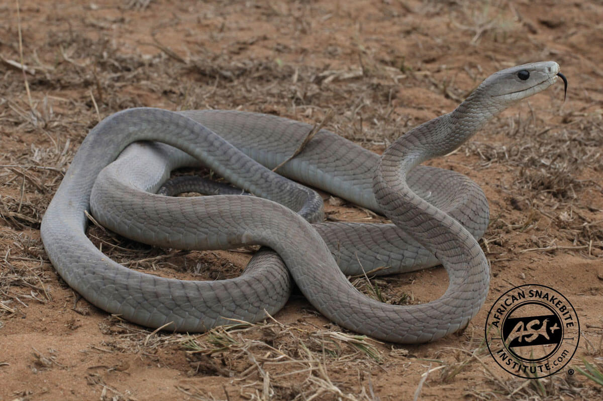

Strategies and Results
Snake venom is primarily for subduing prey, but snakes also use it for defense when threatened. The venom's effects vary, from tissue damage to paralysis, and some snakes, like cobras, can even spit venom. Beyond venom, snakes employ various defense tactics, including camouflage, fleeing, and threat displays like hissing or coiling. Some non-venomous snakes mimic venomous ones, and many will strike and bite as a last resort. They might also release a foul-smelling musk to deter predators.
Most dangerous snakes
- Inland Taipan
- Black Mamba
- Saw-Scaled Viper
